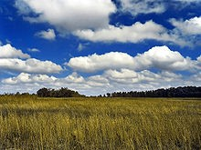

La naturaleza es un concepto utilizado para referirse al mundo material o universo material, incluyendo los fenómenos del mundo físico, la materia inerte generada como parte de procesos sin la intervención humana, y al fenómeno de la vida, que incluye también a los humanos. La naturaleza se extiende desde el mundo subatómico al galáctico. La palabra «naturaleza» procede del latín natura que significa «perteneciente o relativo a la naturaleza o conforme a la cualidad o propiedad de las cosas», «carácter natural». La naturaleza también se encuentra diferenciada de lo sobrenatural.
El concepto de naturaleza como un todo —el universo físico— es un concepto más reciente que adquirió un uso cada vez más amplio con el desarrollo del método científico moderno en los últimos siglos.
Dentro de los diversos usos actuales de esta palabra, «naturaleza» puede hacer referencia al dominio general de diversos tipos de seres vivos, como plantas y animales, y en algunos casos a los procesos asociados con objetos inanimados, como las rocas, así como el tiempo atmosférico, la geología de la Tierra y la materia y energía que poseen todos estos entes. El término naturaleza no incluye a los objetos artificiales, creados como parte de la intervención humana.
A menudo se contrapone el término «naturaleza» a otros términos relacionados con la actividad humana, como «sociedad», «cultura» o «intervención humana». Por ejemplo, se considera «entorno natural» a todos aquellos componentes de un determinado paisaje que no han sido alterados sustancialmente por el ser humano o que persisten a pesar de la intervención humana. Este concepto más tradicional de las cosas naturales implica una distinción entre lo natural y lo artificial, entendiendo lo artificial como algo ejecutado por una mente o una conciencia humana. Sin embargo, muchos entornos percibidos como «naturales» en realidad son entornos fuertemente gestionados e intervenidos por la acción humana, por ejemplo, los parques naturales.
De manera coloquial se utilizan términos como «naturaleza humana» para referirse a supuestas condiciones intrínsecas de los humanos que explicarían determinadas actitudes o comportamientos sociales.
La Tierra
Los rasgos más prominentes del clima de la Tierra son sus dos grandes regiones polares, dos zonas templadas relativamente estrechas y una amplia región ecuatorial, tropical y subtropical.6 Los patrones de precipitación varían enormemente dependiendo del lugar, desde varios metros de agua al año a menos de un milímetro. Aproximadamente el 70 por ciento de la superficie terrestre está cubierta por océanos de agua salada. El resto consiste en continentes e islas, situándose la mayor parte de la Tierra habitable en el hemisferio norte.
La Tierra ha evolucionado mediante procesos geológicos y biológicos que han dejado vestigios de las condiciones originales. La superficie externa se halla fragmentada en varias placas tectónicas que se van desplazando muy lentamente a medida que avanza el tiempo geológico (si bien al menos varias veces en la historia han cambiado de posición relativamente rápido). El interior del planeta permanece activo, con una gruesa capa de materiales fundidos y un núcleo rico en hierro que genera un potente campo magnético. Las condiciones atmosféricas han variado significativamente de las condiciones originales por la presencia de formas de vida, que crean un equilibrio ecológico que estabiliza las condiciones de la superficie. A pesar de las grandes variaciones regionales del clima por la latitud y otros factores geográficos, el clima global medio a largo plazo está regulado con bastante precisión, y las variaciones de un grado o dos en la temperatura global media han tenido efectos muy importantes en el equilibrio ecológico y en la geografía de la Tierra.
Basándose en las pruebas disponibles, los científicos han recabado información detallada acerca del pasado del planeta. Se cree que la Tierra se formó hace aproximadamente 4550 millones de años a partir de la nebulosa protosolar, junto con el Sol y otros planetas. La Luna se formó relativamente poco después (aproximadamente 20 millones de años más tarde, hace 4530 millones de años). Al principio fundida, la capa exterior del planeta se enfrió, dando lugar a la corteza sólida. Las emisiones de gases y la actividad volcánica formaron la atmósfera primordial. La condensación del vapor de agua, junto con el hielo de los cometas que en aquella época impactaban con la Tierra, crearon los océanos.9 Se cree que la química altamente energética produjo una molécula que se autoduplicó hace aproximadamente 4000 millones de años.
Los continentes se formaron, se separaron y se volvieron a unir durante cientos de millones de años, combinándose en ocasiones para formar un supercontinente. Hace aproximadamente 750 millones de años, el primer supercontinente conocido, Rodinia, comenzó a fracturarse. Más tarde, los continentes se volvieron a unir para formar Pannotia, que se dividió hace aproximadamente 540 millones de años. El último supercontinente que conocemos es Pangea, que comenzó a romperse hace aproximadamente 180 millones de años.
Tiempo atmosférico y clima

La atmósfera terrestre es un factor clave que sustenta el ecosistema planetario. Esta fina capa de gases que envuelve la Tierra se mantiene en su sitio gracias a la gravedad del planeta. Está compuesta por un 78 % de nitrógeno, un 21 % de oxígeno y trazas de otros gases. La presión atmosférica disminuye con la altitud. La capa de ozono de la Tierra desempeña un papel esencial en la reducción de la cantidad de radiación ultravioleta que llega a la superficie. Ya que el ADN puede verse fácilmente dañado por esta radiación, la capa de ozono actúa de escudo que protege la vida en la superficie. La atmósfera también retiene calor durante la noche, reduciendo por tanto las temperaturas extremas diarias.
Las variaciones del tiempo atmosférico tienen lugar casi exclusivamente en la parte baja de la atmósfera, y actúa de sistema convectivo para redistribuir el calor. Las corrientes oceánicas son otro factor importante para determinar el clima, especialmente la circulación termohalina submarina, que distribuye la energía calorífica de los océanos ecuatoriales a las regiones polares. Estas corrientes ayudan a moderar las diferencias de temperatura entre el invierno y el verano en las zonas templadas. Es más, sin las redistribuciones de energía calorífica que realizan las corrientes oceánicas y atmosféricas, los trópicos serían mucho más cálidos y las regiones polares mucho más frías.
El tiempo puede tener a la vez efectos beneficiosos y perjudiciales. Los fenómenos meteorológicos extremos, como los tornados o los huracanes, pueden emplear grandes cantidades de energía en su trayectoria y arrasar con todo lo que encuentren a su paso. La vegetación superficial ha desarrollado una dependencia de la variación estacional del tiempo, y los cambios repentinos, aunque solo duren algunos años, pueden tener un efecto devastador, tanto en la vegetación como en los animales que dependen de ella para alimentarse.
El clima planetario es una medida de la tendencia del tiempo atmosférico a lo largo del tiempo. Pueden influir en él varios factores, como las corrientes oceánicas, el albedo superficial, los gases de efecto invernadero, las variaciones en la luminosidad solar y los cambios en la órbita del planeta. Basándonos en los registros históricos, hoy sabemos que la Tierra ha sufrido drásticos cambios climáticos en el pasado, incluso glaciaciones. El clima de una región depende de una cierta cantidad de factores, como la latitud. Una franja latitudinal de la superficie con características climáticas similares conforma una región climática. En la Tierra, existen varias de estas regiones, que van del clima tropical en el ecuador al clima polar en los polos. En el tiempo también influyen las estaciones, que resultan de la inclinación del eje de la Tierra con respecto a su plano orbital. De esta forma, en cualquier momento dado durante el verano o el invierno, hay una parte del planeta que está más directamente expuesta a los rayos del Sol. Esta exposición se va alternando al tiempo que la Tierra va describiendo su órbita. En todo momento, sin importar la estación, los hemisferios norte y sur experimentan condiciones climáticas opuestas.
El tiempo es un sistema caótico que puede modificarse fácilmente con solo pequeños cambios en el entorno, por ello las previsiones meteorológicas exactas solo se limitan a algunos días. En conjunto, están sucediendo dos cosas a nivel global: (1) la temperatura está aumentando por término medio; y (2) los patrones del tiempo están cambiando y volviéndose cada vez más caóticos.
Relación del ser humano con la naturaleza
El desarrollo de la tecnología por la raza humana ha permitido una mayor explotación de los recursos naturales y ha ayudado a paliar parte de los riesgos de los peligros naturales. No obstante, a pesar de este progreso, el destino de la civilización humana está estrechamente ligado a los cambios en el medio ambiente. Existe un complejísimo sistema de retroalimentación entre el uso de la tecnología avanzada y los cambios en el medio ambiente, que solo ahora se están comenzando a entender, aunque muy lentamente.
Los humanos emplean la naturaleza para actividades tanto económicas como de ocio. La obtención de recursos naturales para el uso industrial sigue siendo una parte esencial del sistema económico mundial. Algunas actividades, como la caza y la pesca, tienen intenciones tanto económicas como de ocio. La aparición de la agricultura tuvo lugar alrededor del noveno milenio antes de Cristo. De la producción de alimentos a la energía, no cabe duda de que la naturaleza es el principal factor de la riqueza económica.
Los seres humanos han empleado las plantas para usos medicinales durante miles de años. Los extractos vegetales pueden tratar calambres, reumatismos y la inflamación pulmonar. Mientras que la ciencia nos ha permitido procesar y transformar estas sustancias naturales en píldoras, tintes, polvos y aceites, la economía de mercado y la posición de “autoridad” que se le atribuye a la comunidad médica han hecho menos popular su uso. El término “medicina alternativa” se emplea con frecuencia para designar el uso de plantas y extractos naturales con propósitos curativos.
Las amenazas a la naturaleza provocadas por el hombre son, entre otras, la contaminación, la deforestación, y desastres tales como las mareas negras. La humanidad ha intervenido en la extinción de algunas plantas y animales.